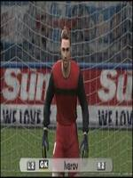

Los jugadores más importantes en la actualidad del club son:
Castolo:
El mejor jugador del equipo. Goleador y regateador lleva 666 goles en sus siete temporadas en El Palancas FC.
Minanda:
El mejor mediocampista de la actualidad y todos los tiempos. A sus 39 años ha superado la figura de leyendas como Pirlo, Modric, Xavi, Iniesta u Ozil al superar las 400 asistencias.
Ordaz:
El mago español recordado por su gol de chilena en libertadores. Constante regate y un goleador prolifico.
Ximelez:
El media punta frances canterano del Palancas. Tuvo un breve paso por el Real Madrid, pero rapidamene regreso para ganar la decimoquinta.
Ivarov:
Portero historico del Palancas. Durante sus 10 años de estadia en el club le han rematado 1500 veces bajo los tres palos, concediendo apenas 157 goles. Un registro de Guinness.

Equipo:
A parte de estos cinco magos del balón, tenemos un equipo lleno de jugadores muy rendidores que se sacrifican en defensa para lograr el equilibro necesario para que Ordaz, Castolo, Minanda y Ximelez hagan la magia arriba.
Guardiolo:
La mente maestra detras del espectaculo. Tiene un estilo propìo, con mentalidad ganadora y cultivando la impronta del esfuerzo. Sus treinta titulos en su paso por FC Barcelona, Manchester City y El palancas avalan el titulo de mejor tecnico de la actualidad.